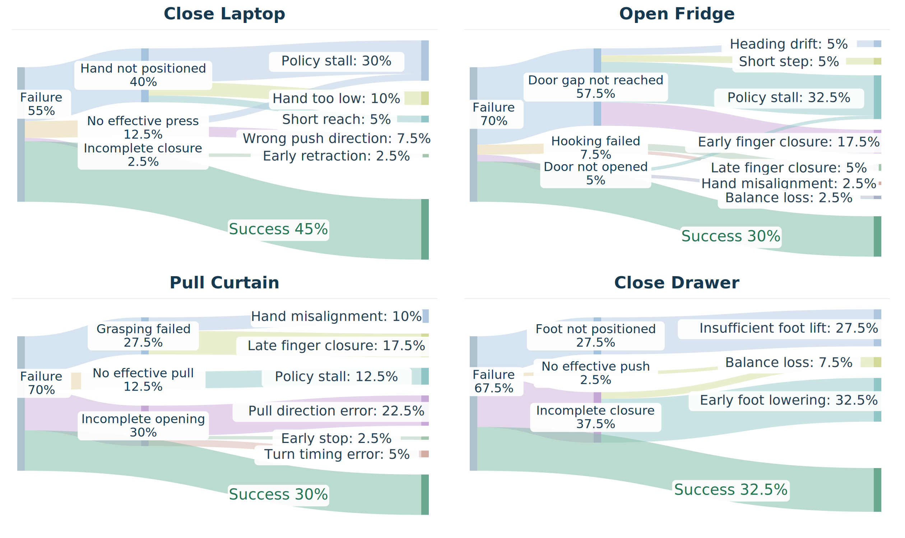

Optimization
Update bounds, regularization and the 400-step Adam schedule.
Appendix A.2 ↗Fixed-motion replay with opposing forces in simulation.
One trajectory per task, one replay per force level, without re-optimization. Forces oppose the operating hand or foot during the interaction window. Errors are full-sequence bilateral means. This tests resistance sensitivity, not object-contact success.
Recorded vs. fixed images with simulated state feedback.
Same checkpoint, initial pose and sampling noise across conditions. The baseline uses recorded images rather than a live robot camera. One example per task; videos are qualitative, not task-success measurements.
S3 is full-task success; task scores are mean ± SD from the same checkpoint.

MLP improves task scores on three of four tasks.
200 human demos reach comparable task scores and the same observed full-task success as 50 robot demos on the two comparison tasks.


97.1% of inputs select D; 1.84% are rejected. The best 200 accepted demos per task are used for training.
Percentages use all inputs. Mean D round uses selected D episodes. Time covers all inputs, including rejected data, on four parallel workstations. Average weights tasks equally.
Rendering and augmentation reduce visual mismatch; benefits vary by task.
Zero-shot means transfer without target-task robot demonstrations, after task-specific human-data training. The 50-task study evaluates motion alignment; the HuMI-style comparison isolates initialization under the same controller.
Rendering preserves the recorded background and does not reconstruct the robot’s changing 3D viewpoint.
Update bounds, regularization and the 400-step Adam schedule.
Appendix A.2 ↗Hand-command binarization, trajectory filtering and curtain-tail trimming.
Appendix A.4 ↗